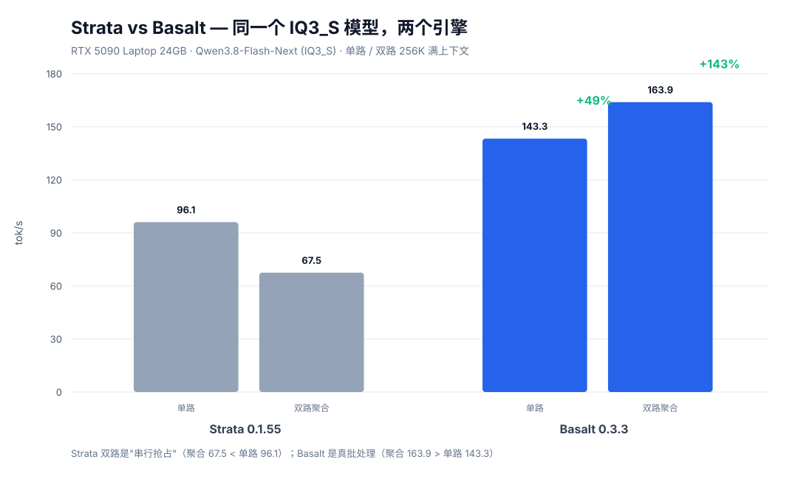
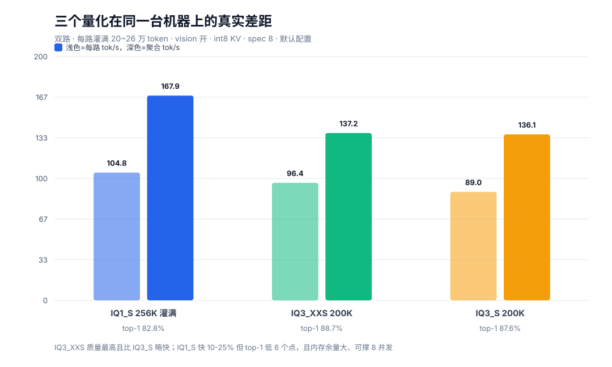
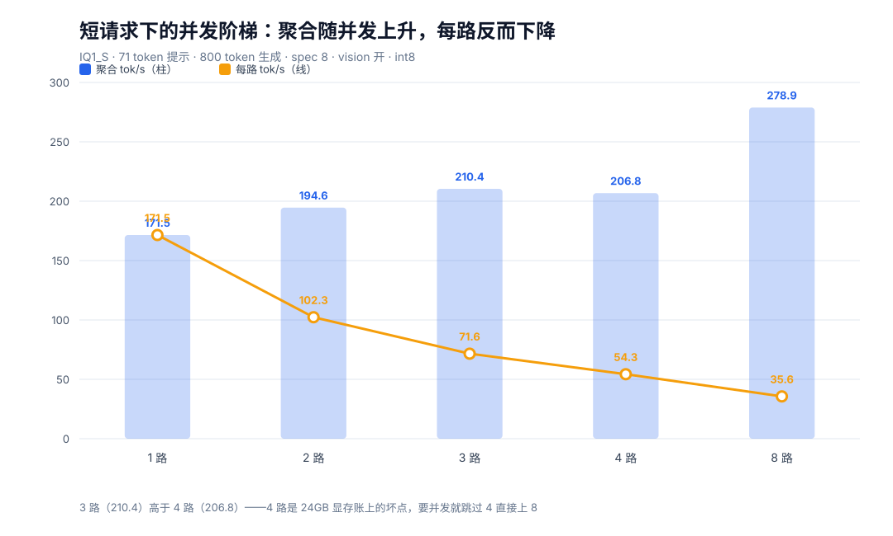
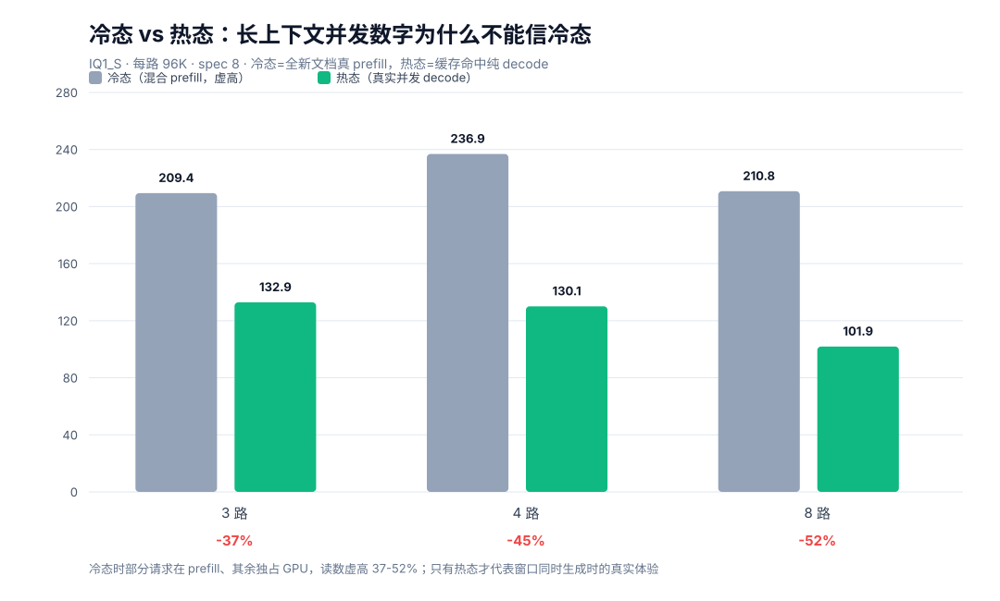
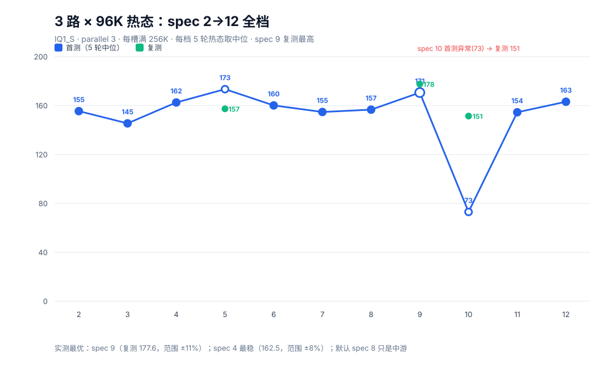
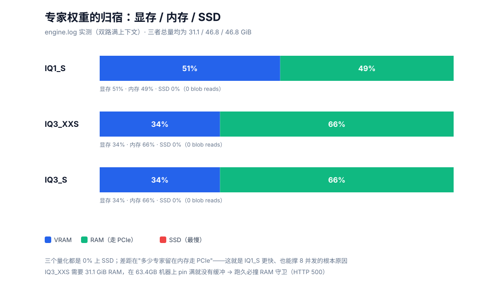

2026-11-14 · Strata vs Basalt 实测
同一台 24GB 笔记本
换引擎，177B MoE 快了一倍
Strata 上单路 96.1 tok/s、双路聚合只有 67.5（串行抢占）。 换成 Basalt 0.3.3 Windows 原生后：单路 143.3（+49%）、双路 163.9（+143%）， 并且 3 路 × 96K 长上下文从"会崩"变成可用、8 路 × 13 万 token 一次跑通。
143.3tok/s
单路（Strata 96.1 → +49%）
163.9tok/s
双路聚合（Strata 67.5 → +143%）
278.9tok/s
8 路短请求聚合
132.9tok/s
3 路 × 96K 热态聚合
256K
每槽上下文上限
0GB
三个量化的 SSD 常驻专家
一、Strata → Basalt：同一个 IQ3_S 的两倍差距
Strata 的双路是"串行抢占"（聚合 67.5 < 单路 96.1）；Basalt 是真批处理（163.9 > 143.3）。

| 项目 | Strata 0.1.55 | Basalt 0.3.3 | 变化 |
|---|---|---|---|
| 单路 | 96.1 | 143.3 | +49% |
| 双路聚合 | 67.5 | 163.9 | +143% |
| 130K prefill | ~2700 | 3716 | +38% |
| 双路是否真并发 | 否 | 是 | — |
二、三个量化：速度与质量的分界
UD-IQ3_XXS 全面替代 IQ3_S（同专家量、质量更高）；UD-IQ1_S 是速度档，快 10-25%，top-1 低 6 个点。

| 模型 | 每路 | 聚合 | top-1 | 备注 |
|---|---|---|---|---|
| UD-IQ1_S | 104.8 | 167.9 | 82.76% | 最快、内存余量大、可撑 8 并发 |
| UD-IQ3_XXS | 96.4 | 137.2 | 88.67% | 质量最高，但 RAM 吃紧（见专家分层） |
| IQ3_S | 89.0 | 136.1 | 87.56% | 被 IQ3_XXS 全面压制 |
三、并发：短请求与长上下文是两条相反的曲线
短请求 8 路聚合最高（279）；96K 长上下文 8 路反而最差（102），3 路最优（133）。4 路是显存账上的坏点。

| 每路上下文 | 2 路 | 3 路 | 4 路 | 8 路 |
|---|---|---|---|---|
| 短请求 · 每路 | 102.3 | 71.6 | 54.3 | 35.6 |
| 短请求 · 聚合 | 194.6 | 210.4 | 206.8 | 278.9 |
| 96K 热态 · 每路 | — | 42.0 | 31.5 | 11.8 |
| 96K 热态 · 聚合 | — | 132.9 | 130.1 | 101.9 |
容量上限：双路 258,772 token 稳定；8 路 × 254,699 token 一次成功；3 路 × 20~26 万会让引擎静默崩溃（Basalt 0.3.3 该配置的稳定性问题）。
四、冷态 vs 热态：为什么长上下文数字会被高估
冷态时部分请求在 prefill、其余独占 GPU，读数虚高 37-52% 且不可复现；热态才是窗口同时生成的真实体验。

五、spec 精调：3 路 × 96K 全档
最优 spec 9（两次 170.6 / 177.6）；最稳 spec 4（162.5，范围 ±8%）；默认 spec 8 只是中游。

六、专家分层：显存 / 内存 / SSD
三个量化都是 0% 上 SSD；差距在"多少专家留在内存走 PCIe"。IQ3_XXS 需 31.1 GiB 常驻 RAM，在 63.4GB 机器上没有缓冲，跑久会撞 RAM 守卫（HTTP 500）。

最终推荐：日常两窗口用
UD-IQ1_S + 双路 + spec 2（每路 ~110）；三窗口长文档用 3 路 + spec 9（每路 ~50，聚合 178）；批量短请求用 8 路 + spec 8（聚合 279）。